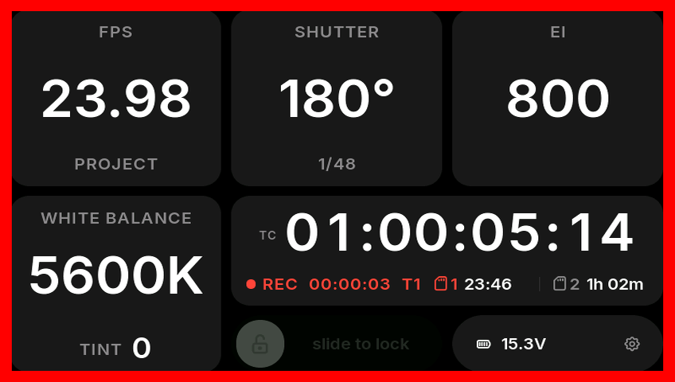
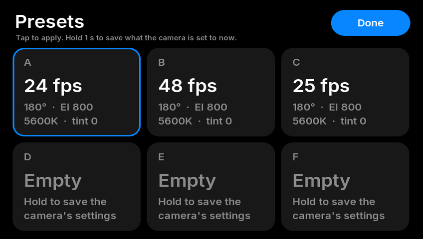
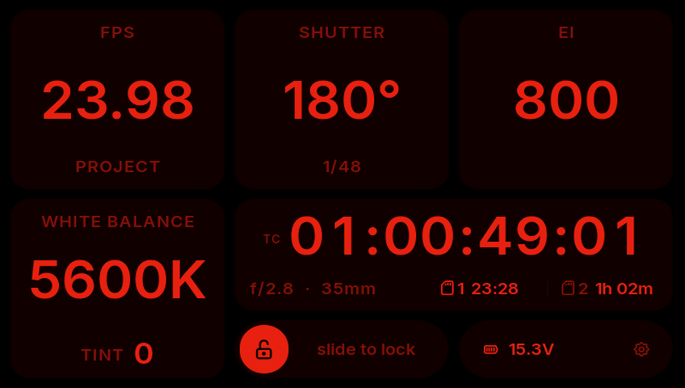

FYXIS
A small touchscreen for the side of the Blackmagic PYXIS 12K. It shows the camera's main settings, timecode, card time and battery, lets you change settings by touch, and has a REC button. It connects to the camera over Bluetooth and is powered from the camera's USB-C port. I built it for my own camera and I'm sharing it in case it's useful to anyone else. It's free and open source.

What it does
- Shows FPS (including off-speed), shutter angle and speed, EI, white balance and tint in large type.
- Shows timecode, time left on both cards, and battery voltage with an estimate of time left.
- Settings can be changed by touch, and locked with a slider.
- A physical REC key on the case. A red border goes round the screen while recording.
- Six presets, a take log, a night mode in red, and firmware updates over Wi-Fi.




Parts to buy
Everything for one unit. Nothing on the camera is modified.
| Qty | Part | Notes |
|---|---|---|
| 1 | Waveshare ESP32-S3-Touch-LCD-4.3 | The 800 × 480 version, not the 4.3B. From Waveshare or Amazon. |
| 1 | USB-C to USB-C cable, right-angle | 15–30 cm, with a 90° plug at least at the board end. It only carries power. |
| 1 | Kailh Choc V2 key switch (PG1353) | Brown (tactile). The printed key fits its cross stem. |
| 1 | 1 kΩ resistor | Any 1/4 W through-hole resistor. |
| 2 | Lengths of thin hook-up wire | About 10 cm each, 26–28 AWG, plus a little heat-shrink. |
| 2 | 1/4"-20 button-head screws, 3/8" long | Into the PYXIS side plate. |
| 4 | M2 × 5 mm button-head screws | Self-tapping into the case. |
| ~30 cm | 1 mm foam tape | Single-sided, about 5 mm wide, for the edge of the glass. |
| ~60 g | PETG or ASA filament | Black, plus a little white and red if your printer does multi-colour. |
You'll also need a 3D printer, a soldering iron, hex keys (5/32" and 1.3 mm), and a USB-C cable to connect the board to a computer once for flashing.
Making one
- Flash the firmware from your browser: instructions.
- Print the case: files and print settings.
- Wire the REC key to the board: wiring.
- Screw it to the PYXIS side plate and plug it into the camera's rear USB-C port.
- Turn on Bluetooth in the camera's Setup menu and enter the PIN the camera shows.
Don't connect a computer and the camera to the board at the same time. Flash it with the camera cable unplugged.
The user guide covers everything on the screen and in the settings.
Notes
I've only used it on the PYXIS 12K. Other Blackmagic cameras with Bluetooth control may work, but the case is made for the PYXIS side plate. While it's connected, the Blackmagic Camera app probably can't connect at the same time.
The firmware is MIT licensed and the case design and docs are CC BY 4.0, so you're welcome to change it, improve it, or make your own. Bug reports and improvements are welcome on GitHub.
FYXIS isn't affiliated with Blackmagic Design. PYXIS is a trademark of Blackmagic Design Pty. Ltd. Use it at your own risk.